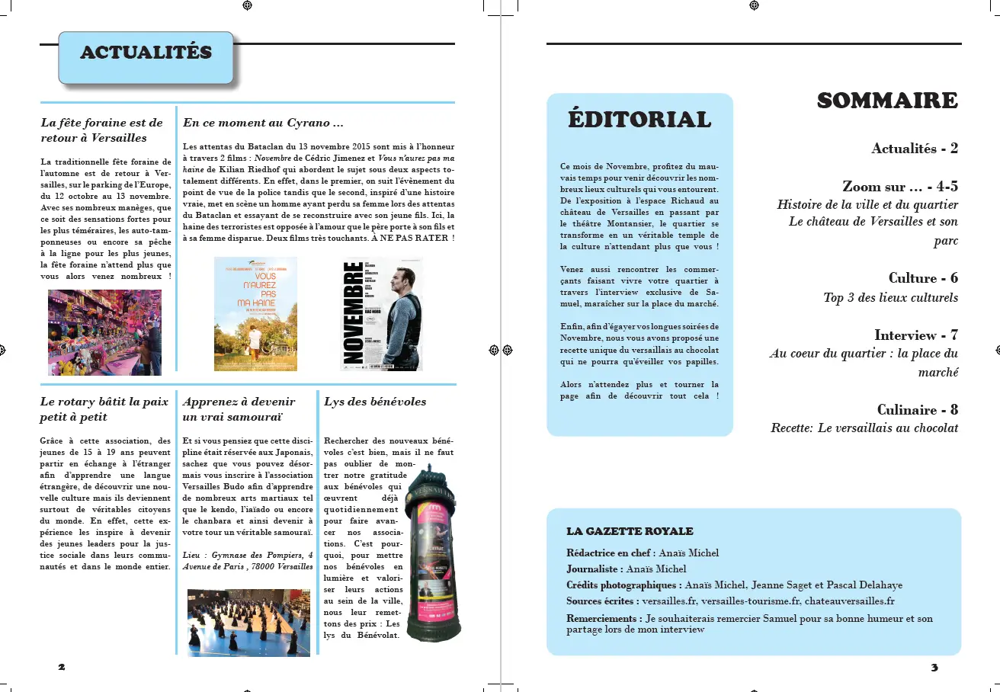
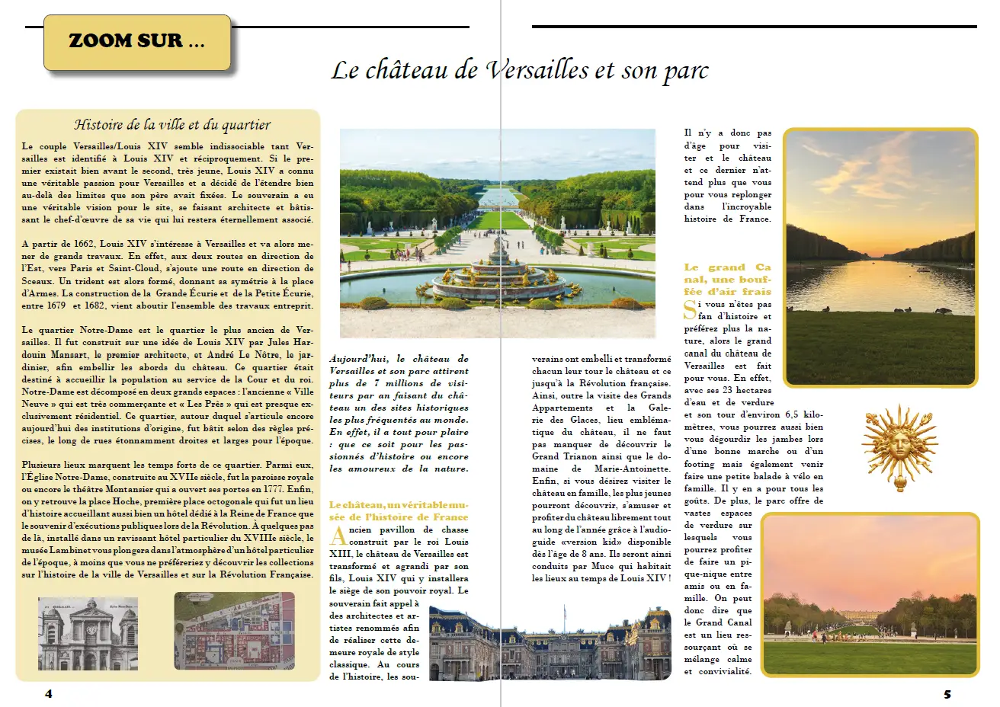
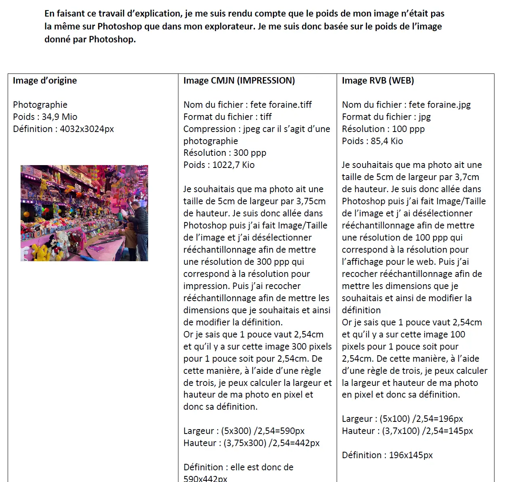

Journal de quartier
Présentation
Pour ce projet scolaire, nous devions réaliser, seul, un journal de quartier sur notre ville. De la rédaction des articles à la mise en page du journal en passant par le traitement des images, ce projet m'a permis de renforcer mes compétences sur Photoshop et InDesign mais aussi de mieux comprendre comment bien gérer mes images.
Rôle
Graphiste et rédactrice
Date
Octobre-Décembre 2022
Compétences
InDesign
Photoshop


